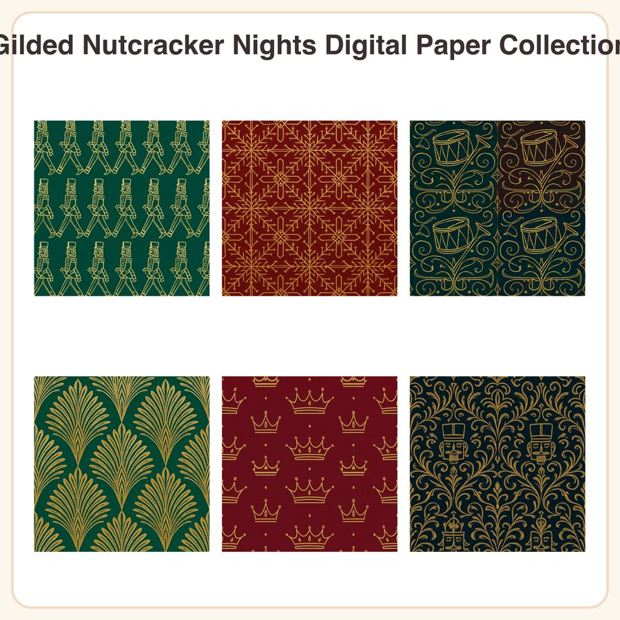

$5.99
View on EtsyElegant, theatrical holiday paper for crafters who want more sophistication than cartoon Christmas prints. This collection pairs art-deco linework with gold foil-effect nutcracker motifs on rich jewel-tone grounds — perfect for luxe holiday cards, scrapbook layouts, gift wrap, and party décor. What's included: • 6 seamless patterns, each provided as: – 1 high-res JPEG, 3072x3072px (12x12in at 300dpi) – 1 repeatable PNG tile for seamless custom-size yardage • 12 files total The patterns: 1. Gold nutcracker soldier silhouettes marching in rows on emerald 2. Art-deco snowflake lattice in gold on garnet red 3. Ornate drum and trumpet motif border on midnight blue 4. Fan-shaped feather plumes in gold foil on emerald 5. Small gold crowns scattered on deep garnet 6. Damask-style scrollwork with hidden nutcracker faces on midnight blue How to use: Print at home or through a print shop for cardstock, wrapping paper, and scrapbook pages. Import into Procreate, Photoshop, Canva, or Cricut Design Space to fill backgrounds, add to junk journals, or design custom holiday stationery. PNG tiles can be scaled and repeated to fill any size project seamlessly. License: For personal use and small business commercial use (up to 500 finished physical items sold). Do not resell, redistribute, or share the digital files themselves, whether altered or unaltered. Honest disclosure: These designs were created by our shop with the assistance of AI image tools, then refined and prepared for print by hand. Instant digital download — no physical item will be shipped. Due to the nature of digital files, all sales are final.